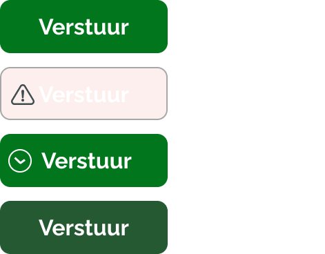
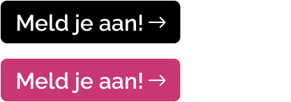

UX/UI design is my forte, and I am passionate about the art of crafting digital experiences tailored
to users' needs. I thrive on conducting research and gaining insights into user behaviors, as
understanding users is paramount in creating meaningful designs. In the realm of digital design, I
view UX/UI as more than a crucial aspect—it is the very foundation that shapes and enhances the
user's journey.
Plog de dag, Gemeente Rotterdam
Load Prototype
Click to load the interactive prototype
Load Prototype
Click to load the interactive prototype
I undertook the development of a responsive website tailored for the city of Rotterdam.
The
objective was to create an online platform specifically dedicated to the newly
introduced
Plogging Day—an initiative designed to encourage citizens of Rotterdam to actively
participate
in cleaning their city.
Key Responsibilities:
Corporate Identity Integration: Aligned the website seamlessly with the
established
corporate identity of the city of Rotterdam, ensuring a cohesive and professional
appearance
consistent with the city's brand.
Responsive Design: Implemented a responsive web design to ensure optimal
functionality and user experience across various devices and screen sizes.
User-Focused Approach: Prioritized a user-centric design to enhance
accessibility,
engagement, and ease of navigation for visitors interested in participating in the
Plogging
Day event.
Information Architecture: Organized content effectively to provide clear and
concise
information about the event, guidelines for participation, and relevant details to
foster
community involvement.
Main Corporate Identity Colors:
#00811F
#000000
#EFF4F6
#FFFFFF
Button States


Results
The resulting website serves as a central hub for the Plogging Day initiative,
promoting
community engagement and fostering a sense of civic responsibility among the
residents
of Rotterdam. The project successfully combines functionality with a visually
appealing
design that aligns seamlessly with the established corporate identity of the
city. My
deliberate choice to employ a blend of captivating photographs and animated
elements was
aimed at enticing a diverse spectrum of Rotterdam citizens, encouraging their
active
participation in the Plogging Day event.
Swimming Outside in Amsterdam, a Data Visualisation
Load Prototype
Click to load the interactive prototype
Assignment: Create a data visualisation webpage based on a self-chosen and
self-researched topic.
For this project, I researched the topic of outdoor swimming in Amsterdam. Outdoor swimming
is
highly popular in Amsterdam, especially on warm summer days. But who are the people swimming
outside, where do they swim, and what motivates their choices?
This research explores the behaviour and decision-making of outdoor swimmers. Do they check
water
quality beforehand, follow the crowd, or simply choose the most convenient spot? Through
surveys
and self-collected data, I examined patterns in location choice, motivation, and swimming
habits.
The resulting data visualisation provides a clear and accessible overview of the places,
motivations, and behaviours of people who enjoy outdoor swimming in Amsterdam. The data is
visualised in a playful and understandable way, designed to match the lighthearted, summery
atmosphere of the topic while still clearly communicating insights.